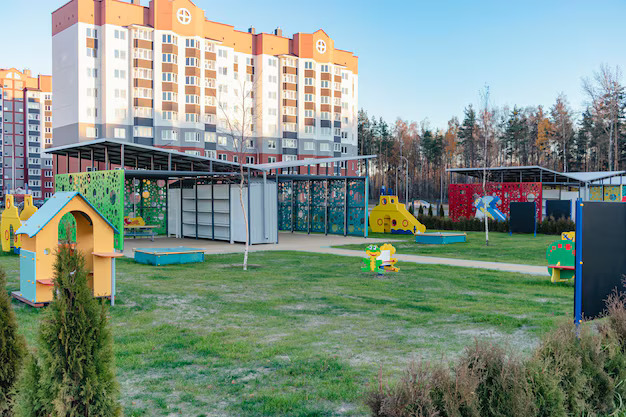

अपने सपनों का घर खरीदें द्वारकाधीश में:"बुनियादी ढांचा स्थानीय आर्थिक विकास को बढ़ाता है।
नाइगांव का परिचय
नाइगांव, जो मुंबई के पश्चिमी उपनगरों में स्थित है, वास्तव में घर खरीदने वालों के बीच एक लोकप्रिय स्थान बन गया है, खासकर उन लोगों के लिए जो शहर के केंद्रीय क्षेत्रों की तुलना में अधिक किफायती आवास विकल्प ढूंढ रहे हैं। नाइगांव, जो मुंबई का एक तेजी से बढ़ता हुआ उपनगर है, अपनी रणनीतिक स्थिति और विकासशील बुनियादी ढांचे के कारण दिन-ब-दिन महत्वपूर्ण होता जा रहा है। यह क्षेत्र अपनी रियल एस्टेट मार्केट में तेजी से विकास देख रहा है, और खुद को एक संभावित आवासीय केंद्र के रूप में स्थापित कर रहा है। मुंबई के करीब होने के साथ-साथ चल रहे विकास कार्य इसे घर खरीदारों और निवेशकों दोनों के लिए आकर्षक बना रहे हैं।
सांस्थानिक संरचना आर्थिक विकास को कैसे आकार देती है
इन्फ्रास्ट्रक्चर (सांस्थानिक संरचना) किसी भी क्षेत्र में आर्थिक विकास का एक महत्वपूर्ण कारण है, और नाइगांव इसका एक अच्छा उदाहरण है। मजबूत इन्फ्रास्ट्रक्चर का विकास, जैसे उन्नत परिवहन नेटवर्क, शैक्षिक संस्थान, स्वास्थ्य सुविधाएं और मनोरंजन स्थल, इस क्षेत्र में आर्थिक प्रगति को तेज़ी से बढ़ा रहा है। बेहतर इन्फ्रास्ट्रक्चर निवेश और व्यवसाय दोनों को आकर्षित करता है, साथ ही निवासियों के जीवन स्तर को भी बेहतर बनाता है। आर्थिक अवसरों और बेहतर जीवन स्तर का यह मेल नाइगांव को एक आकर्षक स्थान बना रहा है, जहां लोग रह सकते हैं, काम कर सकते हैं और निवेश कर सकते हैं।
निष्कर्ष
नाइगांव में चल रहा इंफ्रास्ट्रक्चर विकास आर्थिक वृद्धि को बढ़ावा देने और यहां के निवासियों के जीवन स्तर को सुधारने में महत्वपूर्ण भूमिका निभा रहा है। जैसे-जैसे परिवहन, शिक्षा, स्वास्थ्य और मनोरंजन सुविधाएं बढ़ रही हैं, नाइगांव निवेशकों और घर खरीदने वालों के लिए एक आकर्षक स्थान बनता जा रहा है। यह समग्र विकास न केवल क्षेत्र की आर्थिक प्रगति में मदद कर रहा है, बल्कि नाइगांव को मुंबई मेट्रोपोलिटन क्षेत्र के बड़े आर्थिक परिप्रेक्ष्य में एक महत्वपूर्ण स्थान बना रहा है। इंफ्रास्ट्रक्चर में निरंतर सुधार के साथ, नाइगांव स्थिर विकास की ओर बढ़ेगा और व्यवसायों और परिवारों के लिए एक समृद्ध केंद्र बन जाएगा।
Contact us
+91 72088 43484 / +91 72088 43487
kkcreateandbiuld@gmail.com
Radha Nilaya, Plot No. 164/2,
Bapane Village, Chandrapada Road,
Naigaon (E) - 401208,
Maharashtra, India.